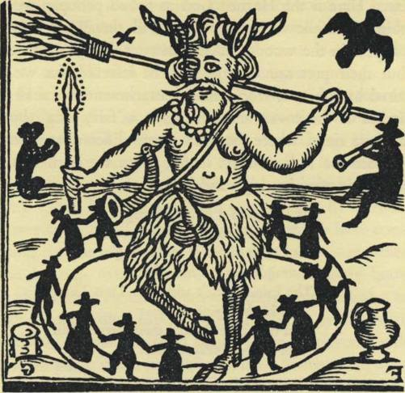
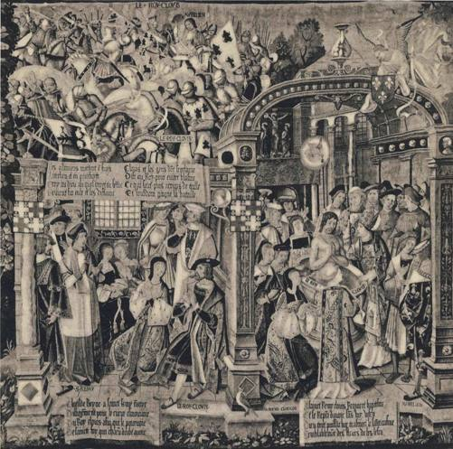
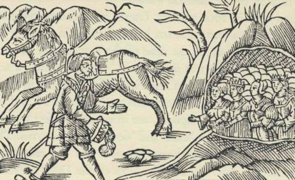
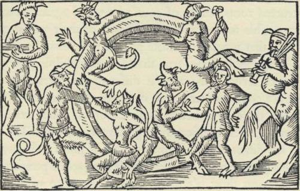
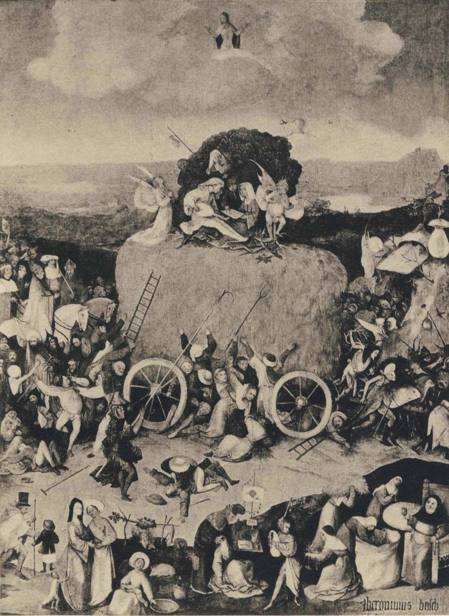
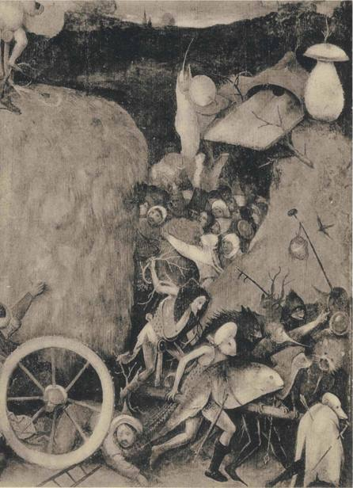
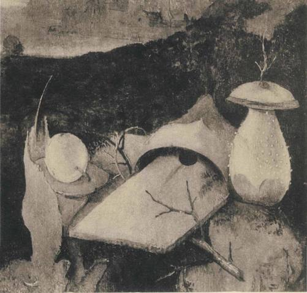

In the Middle Ages the French viewed the toad somewhat differently from
the English, and in this section we shall digress briefly to clarify the distinction.
With the French the emphasis was not directly on the venom but on the crea-
ture as an incarnation of Satan.
In Old French there was a curious word, le lot, which according to the dictio-
naries meant 'toad', and they add that it fell into disuse in the 15th century.
For a time it lingered on in a single phrase: enfle comme une bote, 'blown up like a
female toad', a phrase that beyond the Loire had already become enfle comme un
crapault. (The female is much bigger than the male, and the older simile thus
carried a double superlative.) Bot in the sense of toad survives to this day in
many regional dialects of France and also in the Italian botta. The word in a dif-
ferent meaning still circulates in standard French, in the fossilized term, pied
bot, 'club foot'. What links toads to club feet?
The origin of this word is not in doubt. Bot comes down from a Germanic
root meaning 'blunted', 'malformed', 'clumsy'. It exists in an English form:
the pudgy, clumsy hands of babies are 'puds', as are the forefeet of certain
animals. 'Puddifoot' is a family name, originally a nickname for a cripple.
But why should a toad, with its delicately articulated extremities, be called a
cripple ?
We believe that the history of this little word is a chronicle of successive meta-
phors, and that its primary role was as a euphemism for Satan. The Foul Fiend in
the Middle Ages possessed certain sharply defined attributes. He wore horns.
He had a tail. For hands he showed claws. He was enveloped in the hairy hide of
an animal. He was sometimes represented as glorying in shameless priapism.
Finally, he was a cripple, one leg ending either in a club foot, or a splayfoot,
or a bird's talons, or a paw, or a hoof- a cloven hoof. To this day horns and
cloven hoof are familiar metaphors for wickedness in English. There are low
circles in which 'cripple' serves as an epithet of singular viciousness, beyond
anything that mere lameness justifies. Eric Partridge in his Dictionary of Slang
cites what he calls a senseless phrase used by English schoolboys to spur their
teammates to greater efforts: " Go it, you cripple!" Sometimes the language of
children preserves words and phrases that have disappeared among adults,
and we believe these schoolboys are in hopes that the very Devil will possess
the players on their side. Perhaps our suggestion explains another folk belief
that is still current, the notion that cripples are capable of more than normal
sexual prowess.
In the first instance, then, le hot meant 'the Cripple', a euphemism for Satan.1
In this sense it survived into the i6th century in the oath, Vrai lot! - 'by the
very Devil'. Elizabethan England borrowed this French oath intact. The Oxford
Dictionary gives as its earliest citation the following, dated 1584: "A bots on
thy motley beard!", and the final citation is from 1719:
Bots on them all Both
great and small!
Unaccountably, the Oxford Dictionary says the origin of 'bots' is unknown.
Satan's sinister limp seems to have vanished today from men's memories. It
was vanishing already in Napoleon's time. His coadjutor Talleyrand, notorious
for his loose life and lack of scruples, limped from his earliest years; and this
physical deformity did not escape his enemies, who dubbed him le (liable boiteux,
'the limping devil'. (Boiteux, by the way, is unrelated etymologically to le hot.)
In ear her times either the noun or the adjective would have been redundant. An
English caricaturist devised a satirical coat of arms for Bonaparte, supported
on either side by a Devil, on the right by the Corsican Devil with a cloven hoof,
and on the left by Talleyrand, the French Devil, with a reptilian extremity.
Was it not Talleyrand's distinction to be the last major figure with a limp
whose infirmity was held against him as a demonic stigma? We reproduce
this savage print in our Plate No. XX.
In the next stage, le lot underwent a shift from Satan himself to the creatures
into which he was supposed to transform himself- the toad, a certain kind of
nocturnal bird, and bats.2 The nightjar, kin to the American whippoorwill, was
known in parts of France up to recent times as le hot volant, and also as le crapaud
volant, names so layered with metaphors that they could be fairly translated
in any of three ways, the flying Devil, the flying Cripple, and the flying Toad.
Even more interesting is the widespread use of le hot volant for the bat, a
creature that was formerly steeped in sinister associations. Its nakedness, its
blackness, its miraculous agility in night flight, its facial features stretched taut
1. A parallel for hot is to be found perhaps in bratze, a colloquial name for the toad reported in Bavaria, which
can mean 'paw', 'claw', 'clumsy foot'. But bratze must be considered in conjunction with certain other words
for the toad: Bavarian braste, suggestive of the lamenting cry of the toad; the Bavarian broz and the Austrian
brotze and braitling, these relating to the swelling of the toad.
2. It is permissible to conjecture that the Germanic etymon of hot, in the sense of a rough lump, attached itself
directly to the toad, rather than through the mediation of Satan. There might even be a kinship with the Dutch
padde, the English 'pad' and 'paddock'. But the application of the word to the nightjar and to bats is proof that
in France in the Middle Ages the idea of Satan was uppermost.
81
in a subhuman grimace, the strange profile of its wings with their articulated
struts, its vampirish repute - all these attributes caused it to be feared and loathed
as the very Devil himself, and justified medieval man, in his own eyes, in putting
bats to death, whenever caught, by methods of hideous cruelty, similar to the
treatment accorded to toads.
The English word 'bat' for the flying rodent is first recorded in the year 1523.
Formerly the creature had been a bakke, and philologists have been at a loss to
explain the irregular mutation in its ending. Have they not been looking in
the wrong direction? Surely Tudor England borrowed the new word 'bat'
from France, altering the vowel under the attraction of the native Middle English
word. (The same vowel change was to take place shortly afterwards in God's
name: in the profanity of the iyth century 'God' by a euphemistic mincing of
the vowel became 'Gad'.)
'Old Boots' is one of the names by which the Devil has been known in English.
Is it not a popular adaptation of 'bots'? When Bella, in Our Mutual Friend,
calls her husband a 'Clumsy-Boots',1 is not Dickens, all unawares, recapturing
for us a faint echo of the stumping Cripple's awkward limp, now sugared down
into a loving pet-name? Then there is Puss-in-Boots, le Chat Botte, the fairy
tale that Charles Perrault first put on paper late in the iyth century, in which
a cat displays superhuman acumen when shod in boots. Do we not detect here
a punning echo, come down from much earlier, of the demonic Cripple's
prowess ?
Demonic possession connotes mental disturbance, and we think this is why
'bat' in English, especially in slang, is linked with lunacy. 'Bats' is a vulgar word
for delirium tremens, and those who go 'on a bat' indulge in wild behavior,
while the man with 'bats in the belfry' is quite 'batty'. If we are right, all these
words, full of vigor in the spoken language, stem back to le bat, the limping
Arch Cripple.
Satan today has degenerated into a pallid personification of evil. In the Middle
Ages he was no abstraction, no mere Idea. He was hot flesh and blood. Miss
Margaret A. Murray in her studies of witchcraft has shown that his bestial
attributes - the horns and hoof, the claws, hide, and tail - were those of the
celebrant in the nocturnal rites of the witches' coven, the rites belonging to the
religion of the Horned God, as she calls this divinity, the autochthonous religion
of Europe and the Near East which slowly gave ground before Christianity
and on which in its expiring throes the triumphant enemy bestowed the conde-
i. Part iv, Chap. xi. For a study of names used for the Devil in English, see Charles P. G. Scott, 'The Devil and
his Imps', Transactions of the American Philological Association, Vol. xxvi (1895), pp. 77-146.
8 2

THE CRIPPLE, THE TOAD, AND THE DEVIL
scending name of witchcraft. The master of the ceremonies was known to his
followers by many names, such as Robin Goodfellow in England. On the
tongues of his enemies in the Christian Church Militant he was Satan and the
Fig. 3 ROBIN GOODFELLOW
Devil, the Foul Fiend, the Seducer, he of the Horns and Cloven Hoof, le Bot.
If Miss Murray is right, we are discussing a religion practiced by our ancestors
for thousands of years, which expired just yesterday, and which we can now
study only through the eyes of the Church that was its deadly foe, and through
clues such as we are here discussing. It is not surprising that when Hieronymus
Bosch painted his famous Seven Deadly Sins, the successive scenes swarm with
toads, the incarnation of Satan, as well as other reptiles. We reproduce one of
these vignettes, representing the sin of Pride or Superbia, with a peacock fittingly
present. Satan in the shape of a great man-like toad holds up a mirror to the
worldlings.
In Queen Elizabeth's reign, probably before 1588, there was published in
England a poem entitled The Mad Pranks and Merry jests of Robin Goodfelloiv,l
I. The pamphlet was republished privately by the Percy Society, London, in 1840, using the text of the 1628
edition, with commentary by J. Payne Collier, Esq., F.S.A., on whose information we have relied.
It seems to have appeared in a long succession of editions, of which the earliest
known to survive bears, we believe, the date 1628. The verses are of little worth,
but they and the illustration that accompanies them are valuable as one of the few
spontaneous expressions of the witchcraft cult emanating from within the circle
of sympathizers. Here is the Horned God in proud panoply, le Bot in action.
Here is Robin Goodfellow, Hob-goblin, Will the Wisp, Mad Crisp. No
mushrooms appear in the woodcut that illustrates the 1639 edition, which we
reproduce, but their presence offstage may be inferred, for we are told that
Robin was sired by Oberon, whose fungal attachments we shall shortly point
out. The witches of the coven are dancing in a 'fairy ring', but there is no
evidence that these rings, where the grass grows differently, were linked with
mushrooms before the iSth century. In the poem we learn that Oberon had
been looking for his offspring high and low:
At last upon a summer's night
King Oberon found him out, And
with his elves in dancing wise
straight circled him about, The Fairies
danc't and little Tom Thumb
on his bag-pipe did play And thus they
danced their fairy round
till almost break of day.
The artist who carved the woodcut, though crude in his technique, conveyed
his message effectively. In the heavens fly two black birds, and he took sufficient
pains for their silhouettes to be unmistakable. They are none other than nightjars,
sometimes called goatsuckers or night ravens. These are the lots volants of evil
augury, the sinister birds that held our ancestors in dread fascination:
. . . the night raven Which
doth use for to call Men to
Death's haven.
The toad appears as a visual symbol of Satan and the pagan god in French
iconography in the late Middle Ages. One of the most famous episodes in early
French history was the conversion of King Clovis to the Christian faith. His
wife Clotilde was a Christian, but he resisted the attractions of the new creed
until he fought the battle of Tolbiac in the year 496. When the battle was going
against him he swore that he would abandon the old religion if the Christian
God would give him victory. The tide turned, and shortly thereafter he was
baptized by St. Remi at Reims.
In that city there survive a number of tapestries woven in the I5th and early
16th centuries that depict the life of King Clovis. They show him fighting at
Tolbiac as a pagan clothed in a surcoat adorned with toads, under a standard
bearing the heraldic emblem of toads. The creatures are pictured as from above,
their legs spread-eagled. In the next scene, where St. Remi is giving instruction
to the King, the heraldic toads vanish. In the third scene the king is baptized,
while high above the font an escutcheon appears bearing fleurs de lis, as though
to give a stamp of lofty approval to the happy event. Nearby a dove descends
bearing the holy ampulla with the oil for the king's anointing.
Heraldic emblems did not come into use until about A.D. noo, and the tapes-
tries in Reims are therefore an anachronism, a didactic invention of the Middle
Ages.1 Toads never figured in the arms of any French king. But those who de-
signed these tapestries were not guilty of mendacity. It was their purpose to
convey a simple message to the unlettered laity, and how better could the con-
version of King Clovis be taught through pictures than by showing the pagan
king waging war under Satan's banner? Here the symbols have come full circle:
in the beginning the Foul Fiend was le Bot - the Cripple - and then this name
jumped to the demonic toad, and now the toad, commonly known as le. hot,
stands for the club-footed Fiend. Heraldic creatures are mythical at best, and here
we have myth compounding myth, a legend about a symbol that never was.
The belief in Clovis's toads circulated chiefly among lowly and unlettered folk,
"par le vulgaire et par le menu peuple", and le hot flourished in the same milieu.
We believe that we are the first to direct attention to the demonic multi-
valence of 'the Cripple' in medieval France, but the evil emanations of toads are
well known. Dirk Bax, for example, in his recent book on Hieronymus Bosch2
points out their malign meaning for this painter. He reminds his readers of the
old belief that witches could transform themselves into toads. He recalls the
papal bull published in the year 1233 by Gregory IX wherein toads were called
the symbols of the Devil and magic. He reports an episode in 1610 when a
French sorrier discovered a cast in the left eye of a child, the cast taking the
shape of a toad's leg, and the child confessed that Satan had imprinted this sig-
num diabolicum with his horn. According to an authority that Dr. Bax has found,
St. Anthony beheld Satan in the shape of a toad with a human head, and if we
1. For a sceptical and charming discussion of these toads, see Claude Fauchet's Origines des Chevaliers, Armoiries,
et Heraux, Paris, 1600, p. 17. See also C. Leber's Collection des Meilleurs Dissertations, Notices et Traites Particuliers
relatifs a I'Histoire de la France, Paris, 1838, vol. xiii, pp. 198 ff. Leber quotes from Scevole de Sainte-Marthe
(1572-1650), and the evidence indicates that the popular belief in the heraldic toads of the pagan French kings
goes back at least to the beginning of the I5th century. From the i6th century to the 18th we find in both
English and French sources frequent references to Clovis's heraldic toads. Today they are forgotten by almost
everyone, even historians.
2. Ontcijfering van Jeroen Bosch, The Hague, 1949, p. 33, where the author also gives the sources for his state
ments.
accept the assertions of yet another writer, the toads in Hell torment the sinners,
and in turn are food for the damned. To this day, Dr. Bax says, the Flemings
believe that toads spit venom, just as Bosch shows us in The Last Judgment.
From Simin Palay's recent dictionary of the dialects of Gascony and Beam
we learn that in former days the Gascons spoke of a cast in the eye as a 'toad'
— crapaud — and considered it a distinctive sign of the witch and sorcerer. Here
is that same signum diabolicum which Dr. Bax reported from a different source.
A cast in the eye is a painless blemish, but it reminds us of the paddescheet of
the Dutch, that stye, inflamed and stinging, which people call the toad's excre-
ment. Suddenly there dawns on us a lively and sinister meaning behind these
faint folkloric hints linking toads with the human eye. In the days of the Old
Religion in western and northern Europe, the toad gripped the imagination
of our ancestors with a dread fascination such as the serpent has always exercised
in the East and in India to this day. Yes, in cultural history the toad was the
European equivalent of the serpent in the East. On its face strange, the folkloric
link between toads and the human eye becomes clear if our surmise be right
that the venom of the toad was deliberately used by the priests of the ancient
cult to inflame the eyeballs, and thus heighten the awesome spell of the rites.
Here may lie the reason why a genuine stye suggests the toad's secretion, why
the cast in someone's eye was for the beholders the reminder and sign of demonic
power.
By now the reader may fairly ask what our discussion of Satan and le hot
has to do with the problem of the toadstool. In brief, toads figure in both the
English and the French fungal vocabulary, but the figure of speech in English
emphasizes poison, whereas in French demonic possession plays the dominant
role. In the former, the 'toadstool' is a blanket malediction on all wild fungi,
all of which are erroneously suspect as 'poison-stools'. In the latter, the crapaudin
(like the Basque amoroto] is the name for a particular species, and this species is
not one of the deadly mushrooms. It is the amanita muscaria, the mushroom
that intoxicates and exhilarates, that gives hallucinations. It is the mushroom of
demonic possession. Bad as are both Satan and poison, there is a difference
between the two. The whole world rejects poison, but Satan always has a goodly
following. Unlike lethal poison, Satan is seductive. There is thus a distinction
in the inner meaning between the toxic 'toadstool' and the demonic crapaudin.
The distinction is in the emphasis: the associations of the two terms overlap
but do not coincide.
If our interpretation of le bot is correct, why do we not find this word figuring
in France's fungal vocabulary? The answer is that we do. Eugene Rolland in
86

PLATE xiv. Conversion of Clovis. Tapestry in the Musee de Reims showing King Clovis
in the battle of Tolbiac, his instruction in Christian doctrine
by St. Remi, and his baptism. Woven in 1531.
his Flore Populaire reports bo as a designation for gilled mushrooms in the Haute
Saone, and botet in the Loire. He gives no explanation for these words, whose
inner meaning becomes obvious now for us. It would be well for specialists
in French provincialisms to concentrate on bo and botet, to determine whether
they still survive and where and with what precise fungal application and in
what contexts. In the center and south of France there are regions where bou-
tarel, boutareu, and boutairoual are general words for 'mushroom'. They also mean
in the langue d'oc 'barrel' and 'basket', but we suspect that in the sense of
'mushroom' they are a popular corruption of boterel, a diminutive of le bot
that is not uncommon in France as a family name. A close scrutiny of the
French dialects will certainly uncover additional links, until now unnoticed by
scholars, between toads and mushrooms. On page 73 we mentioned the Gallic
word for 'toad', craxantus, obsolete these many centuries. Does it perhaps sur-
vive in the Gascon name used for the despised and rejected boleti whose flesh
turns blue on exposure to air — craaue-maudit, which would then mean 'the
cursed toad'?
Vve conclude, then, that mushrooms and toads were linked together in
France in former times as part of a cluster of folk beliefs having a demonic
nucleus. The link was strongest, it seems, north of the Loire and faded out as
one approached the Mediterranean. Apparently it stemmed from the Germanic
or Celtic cultural strata that antedated Mediterranean influences, strata steeped
in the blackest mycophobia. And this leads vis again to Hieronymus Bosch.
One of Bosch's powerful paintings is the Hay Wain, to be seen in the Prado.
It is a large triptych, and in the central panel, almost unremarked hitherto by
commentators, there stands forth a giant boletus. So far as our inquiries have
gone, this mushroom was the first significant representation of a fungus1 after the
ancient fresco of Herculaneum (which we reproduce on Plate LXXVI), a lapse of
I. The Bulletin of the Societe Mycologique de France in 1911 (vol. xxvii, p. 31) announced to the mycological
world the discovery of a I3th century fresco representing the temptation of Eve. The mycologists who focused
their attention on this fresco persuaded themselves that the Tree of Good and Evil had been portrayed by
the artist as an amanita muscaria. The fresco, which we visited in the summer of 1952, is in a disaffected chapel
in France, in the Berry, between Ingrandes and Merigny, near the Chateau de Plaincourault. The style is Ro-
manesque, and this fits the date that the edifice bears - 1291. Since the initial announcement there have been
numerous references to the fresco in mycological publications; e. g., The Romance of the Fungus World, by
R. T. and F. W. Rolfe, London, 1925, p. 291; also John Ramsbottom's Mushrooms & Toadstools, pp. 46-7 and
illustration facing p. 34; also The Illustrated London News, Nov. 21, 1953. The mycologists would have done
well to consult art historians. The Plaincourault fresco does not represent a mushroom and has no place in a
discussion of ethno-mycology. It is a typical stylized Palestinian tree, of the type familiar to students of By-
zantine and Romanesque art. The German art historians have even devised for this oft-repeated motif the
technical designation of Pilzbaum.
more than fourteen centuries. Let us see if we can arrive at the meaning of this
extraordinary mushroom, so boldly painted, at first glance so enigmatic.
The Hay Wains left-hand panel, of which we reproduce the upper part on
Plate XXXVI, depicts with idyllic beauty the momentous events that took place
in Paradise in the Beginning, up through the final scene where the Angel of the
Lord drives Adam and Eve forth from Eden into the wilderness. The right-
hand panel depicts Hell. The central panel is occupied chiefly by a huge load of
hay, which is the dominating feature of a procession that enters the scene from
Paradise on the left and disappears on the right heading for Hell. The wagon
is being hauled by a miscellany of grotesque creatures who are personifications
of the Sins. With a dead switch the Devil in the foreground drives on these
monsters. The withered branch, as always in Bosch's symbolism, signifies cursed
sterility, recalling the withered vine of Christ's homily. Sceptred king and
mitred churchmen with their trains follow the hay-wagon, which as it progresses
crushes little men like a juggernaut. Jesus looks down in anguish from Heaven,
and a strange group of merry-makers disport themselves a-top the hay.
The hay wain represents pleasure, but it remained for Mr. and Mrs. Nicolas
Galas of New York, in the course of their studies of Bosch, to discover the precise
text that is illustrated, a passage in a book with which Bosch was familiar,
Gregory the Great's Morals on the Book of Job, written after A.D. 600. In Book
32, paragraph 7, Gregory is commenting on the Vulgate text of Job 40: 4
(King James Version, Job 40: 9):
As he says by the Prophet, 'Behold, I will shriek over you, as a cart creaketh laden
with hay' [Amos 2: 13], for since the life of the carnal is hay, as it is written 'All flesh is
hay' [Isaiah 40: 6], in that the Lord endures the life of the carnal, he declares that he
carries hay as a cart. And to creak under the weight of the hay is for Him to bear, with
murmuring, the burdens and iniquities of sinners. [Vot. 3, Part 2, p. 514, of the English
translation by J. H. Parker et al., published in Oxford, 1844-1850]
On the right in front of the wagon the great procession is joined by a small
confluent stream of people pouring from a door-way as the hay-wagon ap-
proaches their earthly abode. They too are damned souls, as is declared by their
leader's reaching up for carnal hay on the wagon, and by another branch,
withered and cursed, that holds up the trapdoor of the habitation out of which
this secondary stream emerges. In the door can be seen the peephole used by the
inmates when the door is closed. In our opinion the doorway gives access, not to a
cave, but to a turf-covered dwelling, of which the roof rises to a clearly identifi-
able peak, made by the upright post that is presumably the structural support
for the primitive structure. On the left of that peak there lies a fruit, symbol of
man's First Fall. On the right stands our mushroom. Bosch has painted not a
mushroom, but a gigantic effigy, a mushroom sculptured in stone or wood. It
represents a boletus, perhaps the boletus satanas, a species that to this day is
popularly associated with Satan in Central Europe. The light color of the
painted mushroom effigy is not significant, for it is the color of the material
in which the mushroom is sculptured. The stem is covered with flecks like
goose-flesh. The cap is disproportionately small, and from it emerges again
the withered branch of the Biblical curse.
We have seen that in i6th century France mushrooms were called pain de
crapault, 'toad's bread', a term that has been reported in modern times in Nor-
mandy. Contemporaneously, at the time of the Renaissance, the corresponding
name in Flemish and Dutch was duivelsbrood,1 'devil's bread', a term now ob-
solete in the standard language, but historically documented in the larger Dutch
and Flemish dictionaries. These two expressions, 'toad's bread' and 'devil's bread',
superficially using different metaphors, are in essence perfect translations one of
the other, for as we have seen 'toad' and 'devil' are synonyms. The effigy of a
mushroom that Bosch the Dutchman painted was the effigy of the Devil's
Bread, and the people who lived at the Sign of the Devil's Bread were bread
for the Devil.
Our mushroom effigy is then a pictographic embodiment of a popular
metaphor, and proclaims the curse that lies on the household dwelling within.
This interpretation receives surprising support from an otherwise inexplicable
detail of the painting. The base of the mushroom shows two flattened surfaces.
Bread always bears the imprint of the vessel in which it is baked, and here we
discover the beveled faces left by the Devil's bread-pan. How obvious this must
have been for Bosch's neighbors in the Low Countries!
There remains a crucial question: why did Bosch introduce into this sermon
in paint the minor tributary stream of Hell-bent sinners, emerging from the
House of the Devil's Bread? Clearly this rather crowded detail of his exhortation
on the carnal sins was not a capricious fancy. He was asserting something, but
what; Here is our conjecture. The main stream of sinners is recruited from the
Christian community, as evidenced by the trappings of the leaders. The tri-
butary stream is fed by folk similarly damned but who have not belonged to
the Christian fold. The Devil is the hot-blooded Devil of the witches' covens.
The people crowding forth from the hovel do not lend themselves to a precise
count but they are about thirteen, the full complement of a witches' coven with
i. See Hadrianus Junius' Nomendator, Paris, 1567, p. 144, where the word is spelled duyuehbroot; also the history of
duivelsbrood in Dr. J. A. N. Knuttel's Woordcnboek der Nederlandsche Taal.
89

their leader the Devil, whom we may perhaps distinguish in this group. Here
are then the 'fairy folk', who were wont to dwell in the remote and desert
places and who paid no obeisance to Pope or Christ. They were described in
vivid detail by the Swedish writer Olaus Magnus, whose Historia de Gentibus
Septentrionalibus appeared in 1555 in Rome,1 a generation after Bosch's death.
The fairy folk dwelt in houses walled and roofed with turf, the roof being sup-
Fig. 4 PRINCE VISITING FAIRY FOLK, after OLAUS MAGNUS .
ported by a central post. A woodcut in Olaus Magnus shows the Swedish King
Hotherus paying a visit on the fairy people and we reproduce it here, for we
suggest that the house painted by Bosch springs from the same folk beliefs as
the houses in the Magnus woodcut a half century later. Miss Margaret A. Mur-
ray may be right that a culturally distinct people, autochthonous, unlettered,
and pagan, lived side by side with the Christian world in northern Europe
down into Renaissance times. But whether that people existed or not, the
belief in them existed and was generally accepted, and Bosch presents those
cursed outcasts to us under the Sign of the Devil's Bread, a sinister and myco-
phobic Sign that marks for us the initial emergence of the mushroom world
into the documentary annals of northern Europe.2
1. The English edition was published in London in 1658 as A Compendious History of the Goths, Swedes and
Other Northern Nations. See Book m, Chapters 9 and 10. See also Miss Murray's The God of the Witches, Oxford
University Press, New York, 1952, Chapter n.
2. The mushroom in the Hay Wain is not the only one painted by Bosch. In his ghostly portrayal of The World,
strangely disturbing, on the back of the wings of the Garden of Delights, there are two unmistakable mushrooms,
possibly three, all in the left-hand panel. Elsewhere we find shapes that suggest mushrooms, perhaps intended
by Bosch to do so; e.g., one such shape in the left-hand panel of the Garden of Delights and two in the central
panel, the table in the Cure for Folly, and various 'puckfist' shapes elsewhere. The demonic symbolism of the
toadstool may have played an important and hitherto unsuspected role in Bosch's cosmos.
9 0

THE CRIPPLE, THE TOAD, AND THE DEVIL
For the medieval world the fairies were sinister beings, at least in orthodox
eyes, and down to recent times the flavor of the old belief could still be detected
in Sussex, where 'fairy rings' long continued to be called 'hag tracks'. By the end
of the 16th century the fairies had become the dulcified sprites of modern usage
and this transformation has been attributed to the imposing genius of gentle
Shakespere. But the time has come to take new soundings in the social upheavals
of that troubled i6th century. The Reformation turned society upside down
and inside out, and perhaps layers of the community, formerly inarticulate,
where the fairies had always been beloved rose to the top and through Shake-
spere and others made their voices heard.
Fig. 5 FAIRY RING, after OLAUS MAGNUS.
PLATES XV, XVI, XVII

PLATE xv. Hieronynius Bosch. The Hay Wain. Central Panel. Madrid, Prado Museum.

PLATE xvi. Hieronymus Bosch. The Hay Wain. Detail. Madrid, Prado Museum.

PLATE xvn. Hieronymus Bosch. The Hay Wain. Detail: Boletus. Madrid, Prado Museum.